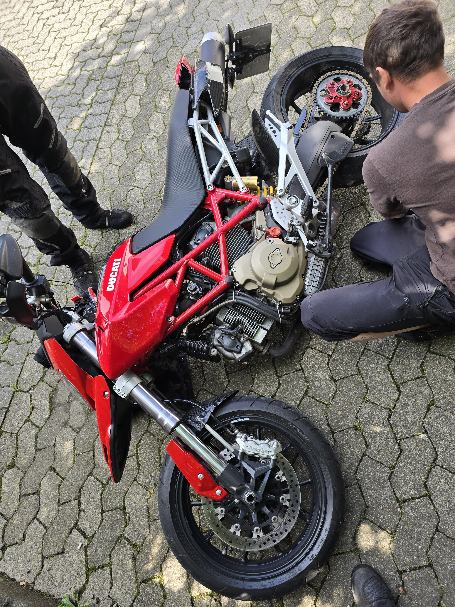
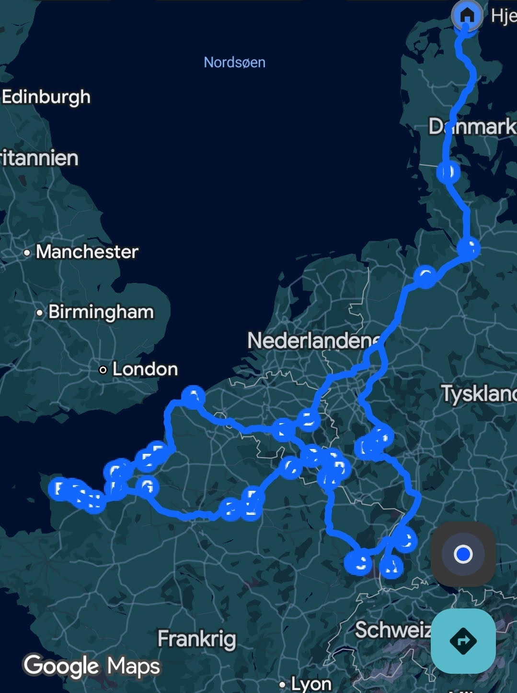

Bag Facaden
Når jeg tager arbejdshandskerne af, handler mit liv om nærvær og perspektiv. Jeg tror på, at man skal gøre tingene 100% uanset om det gælder forældreskab eller fritid.

Min vigtigste opgave er at være en stærk far og et ordentligt forbillede. Vi fordyber os i alt fra perleplader til teknik.

Det handler om at "reboote" hjernen. I det sekund jeg sætter mig på maskinen, tømmes hovedet.

Hvor andre ser en ødelagt ferie, ser jeg en opgave. Jeg koblede hovedet fra ferie-mode og over i fejlsøgnings-mode.

Jeg brugte et Python-script til at splitte hele min rute op i logiske segmenter og optimere køretiden.

At kunne fikse ting fysisk holder min problemløsning skarp. Der er en tilfredsstillelse i at se et konkret resultat.